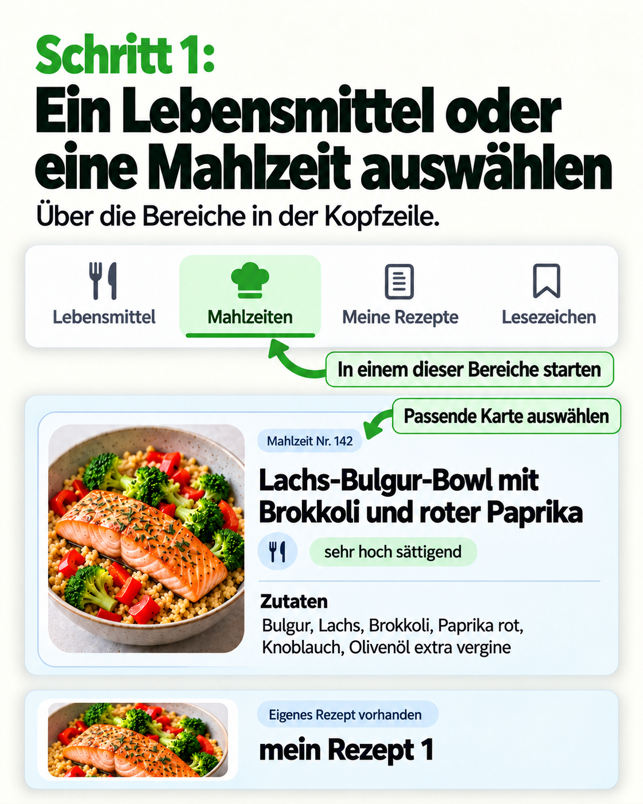
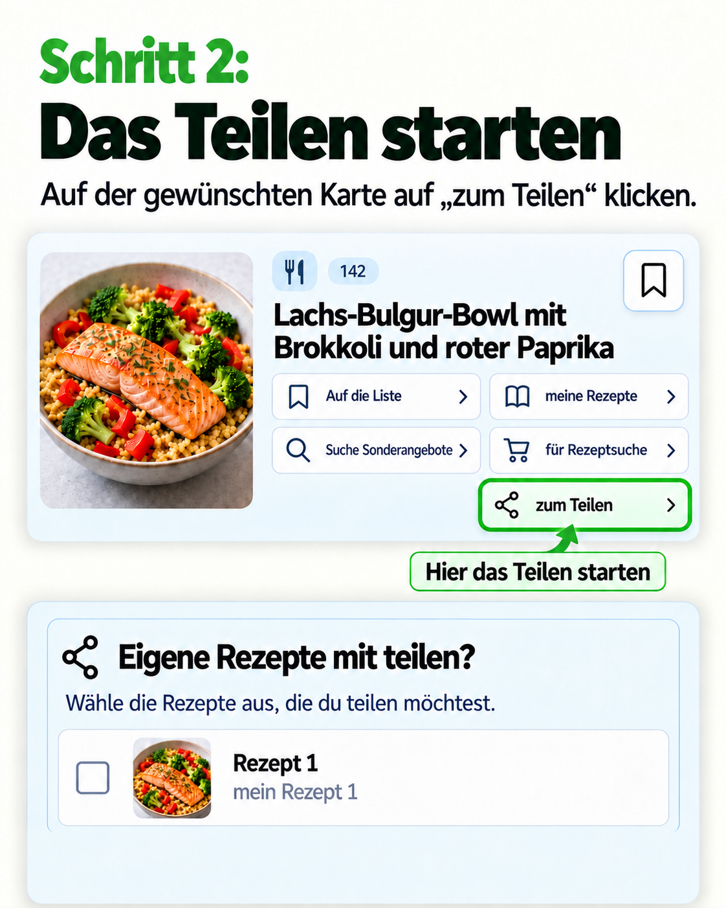
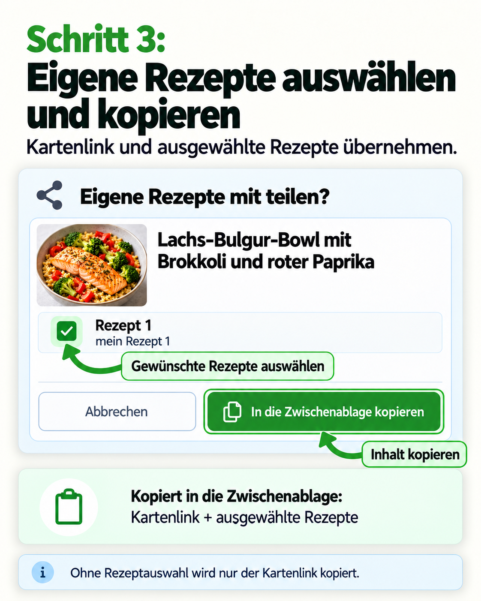
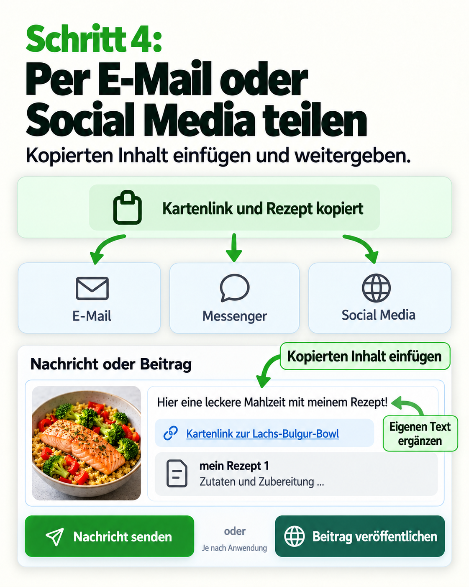
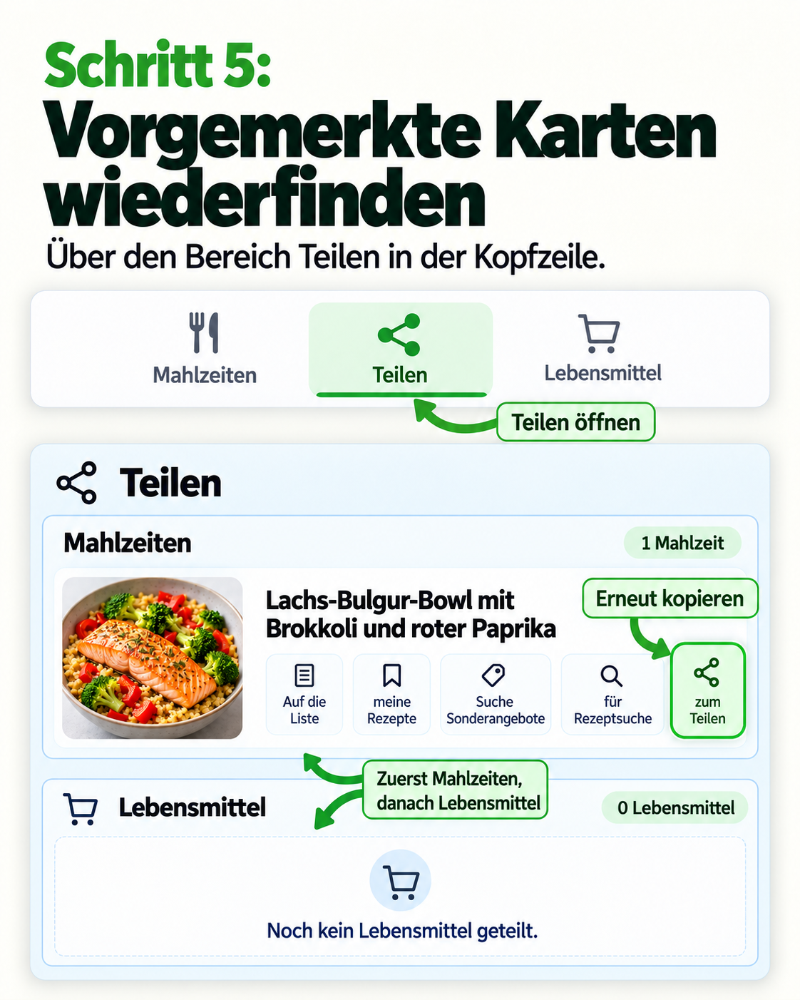
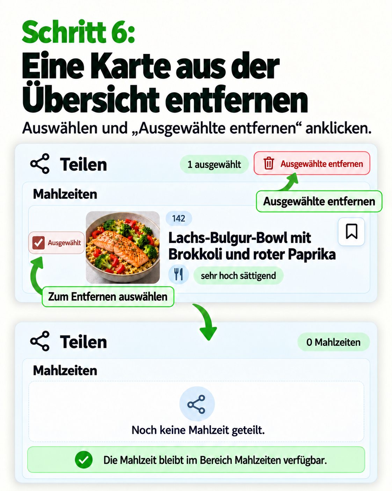

So funktioniert’s bei: Teilen
Sechs Erklärbilder im Stil der Lesezeichen-Serie.
Schritt 1: Ein Lebensmittel oder eine Mahlzeit auswählen

PNG herunterladen
Schritt 2: Das Teilen starten

PNG herunterladen
Schritt 3: Eigene Rezepte auswählen und kopieren

PNG herunterladen
Schritt 4: Per E-Mail oder Social Media teilen

PNG herunterladen
Schritt 5: Vorgemerkte Karten wiederfinden

PNG herunterladen
Schritt 6: Eine Karte aus der Übersicht entfernen

PNG herunterladen